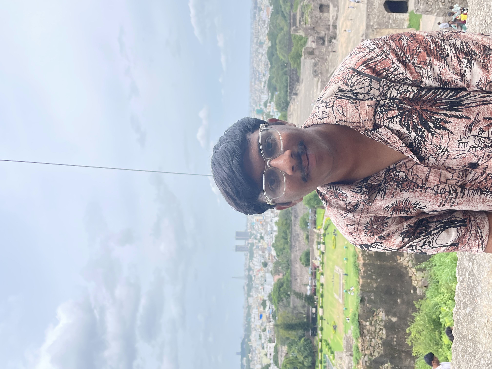

I am Bala and I like imagining and visualizing random scenarios in my mind. Someday I'll get you too to these visuals through computer graphics.
I enjoy playing and watching Football (big time Dortmund fan), Cricket, watching Movies, travelling, trekking, discussing Geopolitics and chilling with friends.
